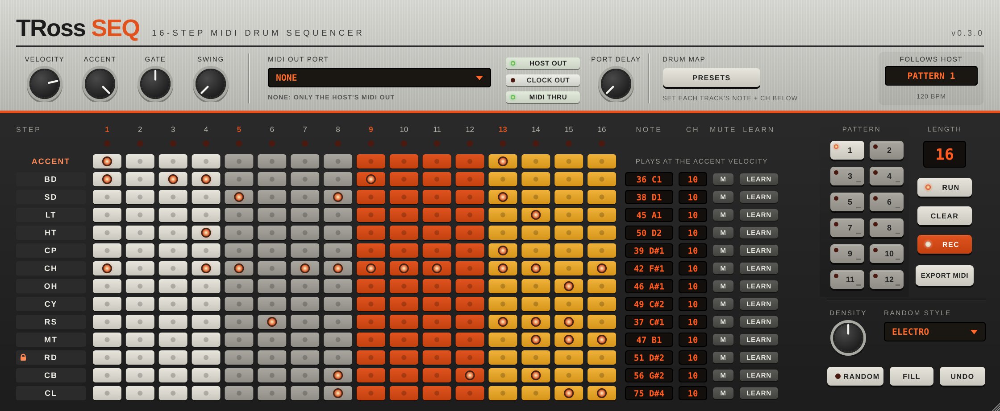

TRoss Seq is a 16-step drum sequencer that plays your hardware drum machines over MIDI, locked to your DAW's tempo.
TRoss Seq makes no sound of its own. It is an instrument plug-in that outputs MIDI, which is why it loads on a MIDI or instrument track.
/Library/Audio/Plug-Ins/Components and the VST3 in /Library/Audio/Plug-Ins/VST3. Click Customize to install only one of them.You'll find it in Live's browser under Plug-Ins → Audio Units → Ticco Ross → TRoss Seq (or under VST3).
Run TRossSeq-0.3.0-Windows-Setup.exe. If SmartScreen appears, click More info → Run anyway. The VST3 goes to C:\Program Files\Common Files\VST3. Rescan plug-ins in your DAW.
Unpack the .tar.gz and run ./install.sh. It copies the VST3 to ~/.vst3 and the LV2 to ~/.lv2, with no root needed. ./uninstall.sh removes them.
Install the new version over the old one, then rescan. Your projects keep their patterns and settings. The version number is shown at the top right of the panel.
VELOCITY, ACCENT, GATE and SWING knobs (section 11). Hover a knob to see its value; double-click resets it.
MIDI OUT PORT selector and status line, HOST OUT, CLOCK OUT, MIDI THRU and PORT DELAY (section 5).
PRESETS: note maps for common drum machines, all lanes on one channel, save as default (sections 6 and 14).
Shows the playing pattern and what's queued next. In a DAW TRoss Seq follows the host's transport and tempo.
Name strips (play, rename, lock), step pads, and per lane NOTE, CH, M (mute / solo) and LEARN.
12 pattern buttons, LENGTH, RUN, CLEAR, REC and EXPORT MIDI.
DENSITY, RANDOM STYLE, and the RANDOM, FILL and UNDO keys (section 12).
| Display | Meaning |
|---|---|
| PATTERN 1 | Pattern 1 is playing and is the one you're editing. |
| PAT 1 > 2 | Pattern 2 is queued. It takes over when pattern 1 is back at step 1. |
| PAT 1 > RND | A random pattern (or fill / variation) is waiting for step 1. |
There are two outputs. Use one or both, but don't send both to the same drum box, or every note plays twice.
| Output | How it works | Use it in |
|---|---|---|
| MIDI OUT PORT | TRoss Seq sends straight to the port you pick: a MIDI interface, or a drum box with USB MIDI. It has its own high-priority timing, so notes don't jitter with the DAW's buffer. | Every DAW. The way to go in Ableton Live. |
| HOST OUT | The notes go to the DAW's MIDI output for the plug-in, and you route them from there. | DAWs that route plug-in MIDI: Bitwig, Reaper, Logic, Cubase, Studio One… |
Click the selector to see the ports connected right now; the list refreshes each time it opens. NONE switches the port output off. The status line below tells you what's going on:
| Status | Meaning |
|---|---|
| CONNECTED | Notes are going to the port. |
| NOT CONNECTED… | The project asks for a port that isn't plugged in. Plug it in and pick it again, or pick another port. |
| COULDN'T OPEN… | Another program holds the port (common on Windows; see section 16). |
Delays everything sent to the port by 0–250 ms, to line the drum box up with the audio coming out of your DAW. Start at about your audio buffer size (in ms) and adjust by ear against a sound in the DAW.
Sends MIDI clock (24 ticks per quarter note), Start, Stop, Continue and Song Position to the port. Switch it on if your drum box has tempo-synced effects or its own sequencer that should follow along, and set the drum box to sync to external / MIDI clock. Clock goes to the port only.
Passes the MIDI coming into the track (your keyboard or pads) through to the outputs, so you can play the drum box live through TRoss Seq. In Live, arm the track (or set its monitor to In) so your keyboard reaches the plug-in.
Each of the 13 lanes has a name strip on the left and its MIDI settings on the right.
| Control | What it does |
|---|---|
| Name strip | Click to play the lane's note now. Shift-click plays it at accent velocity. It lights up every time the lane sends a note. |
| Rename | Double-click the name and type up to 10 characters; Return keeps it, Esc cancels. The name also tells the randomiser what kind of drum the lane is (section 12). |
| NOTE | The MIDI note the lane sends. Drag the red read-out up or down. Note names follow Ableton's convention (C1 = 36). |
| CH | The MIDI channel, 1–16. Drag up or down. |
| LEARN | Click it (it blinks), then hit a key or pad: the lane takes that note and channel. |
| Right-click a name | Rename, Learn, Randomise this lane, Lock from the randomiser. |
Give each drum box its own MIDI channel and set the lanes' CH to match: for example lanes 1–8 on channel 10 for one box, lanes 9–13 on channel 11 for another. Both boxes can sit on the same MIDI port (daisy-chained through MIDI THRU) or you can use two TRoss Seq instances with a port each.
| Action | Result |
|---|---|
| Click M | Mutes the lane (the button lights yellow). Click again to unmute. |
| Shift + hold M | Momentary solo. The button turns blue and shows S; only that lane plays, even if it is muted itself, and every other lane goes quiet. Let go of the mouse button and everything is back exactly as it was. Nothing is toggled. |
Mutes can be automated in your DAW (Track 1 Mute … Track 13 Mute). They don't affect clicks on the name strips or MIDI THRU.
| Control | What it does |
|---|---|
| LENGTH | Pattern length, 1–16 steps. Drag the red read-out up or down; double-click for 16. Steps past the length are dimmed and don't play. Use odd lengths for patterns that drift against the bar. |
| RUN | Sequencer on/off. With RUN off, the steps still advance but send nothing; MIDI THRU and the name strips keep working. |
| CLEAR | Clears the pattern that's playing, accent row included. (RANDOM's UNDO doesn't bring a cleared pattern back.) |
TRoss Seq always follows the DAW: it starts, stops, loops and jumps with the transport, and step 1 falls on the downbeat of each bar. When the transport stops, any note still held gets its note-off.
With REC on (it is by default) and the song playing, every incoming note that matches a lane is written into the nearest step of the playing pattern. Swing is taken into account.
Switch REC off to play along without writing anything.
| Knob | Range | What it does |
|---|---|---|
| VELOCITY | 1–127 | Velocity of normal steps. Default 100. |
| ACCENT | 1–127 | Velocity of steps with the ACCENT row lit, and of Shift-clicked name strips. Default 127. |
| GATE | 5–95 % | How long each note is held, as a fraction of a 16th note. Most drum boxes only care about the note-on; longer gates matter for sounds that respond to note length. |
| SWING | 50–75 % | 50 % is straight. Higher values push every second 16th (steps 2, 4, 6…) later: 54–58 % is a light shuffle, 66.7 % a triplet feel, 75 % the maximum. |
The randomiser writes patterns lane by lane, the way each drum is usually played, instead of throwing random dots on the grid.
| Control | What it does |
|---|---|
| RANDOM | Writes a whole new pattern into the playing slot. Every unlocked lane is rewritten over the current LENGTH. The ACCENT row is never changed. |
| Shift-click RANDOM | A variation: only a few steps of a few lanes change, and the anchors (kick on step 1, the backbeat) stay. Good for keeping a groove alive without losing it. |
| FILL | Rewrites only the last four steps of the pattern with a fill: toms, snare, hats and percussion. Press it before the bar you want the fill in. |
| UNDO | Goes back to the pattern as it was before the last RANDOM, variation, fill or lane randomise; up to 32 steps back. Greyed out when there's nothing to undo. |
| DENSITY | How busy random patterns are. 50 % follows the style as designed; lower is sparser, higher is busier. The anchors (kick on 1, the backbeat in STRAIGHT) are kept at any density. |
| RANDOM STYLE | The character of what RANDOM and the variation write (below). |
| Alt-click a name (Option-click on a Mac) | Locks the lane: a padlock appears and RANDOM, the variation and FILL leave it alone. Alt-click again to unlock. Locks are saved with the project. |
| Right-click a name → Randomise this lane | Rolls just that one lane, even if it's locked. |
While the song plays, a random result waits for step 1, so the pattern never changes in the middle of a bar. The RANDOM key's light blinks and the display shows PAT 1 > RND until it takes over. Press RANDOM again while it's waiting to roll a different one; press UNDO to cancel it. While stopped, results are written at once.
| Style | Character |
|---|---|
| STRAIGHT | Four on the floor: kick on the beats with the odd extra, snare always on the backbeat (steps 5 and 13), 8th-note hats with some 16ths, open hats on the off-beats, toms near the end of the bar. |
| ELECTRO | Syncopated kick (always on step 1, then pushed around steps 4, 7, 11 and 12), snare on step 13 and usually 5, clap mostly on 13, busy 16th hats, occasional open hats and tom fills. |
| BROKEN | Scattered and off the grid: kick on 1, then anywhere; snare not tied to the backbeat; looser hats and more percussion. |
The randomiser decides what each lane is from its name first, so renaming a lane changes how it's treated. If the name doesn't say, it goes by the lane's General MIDI note.
| Treated as | Names that count | GM notes | Plays like |
|---|---|---|---|
| Kick | BD, KICK, BASS… | 35, 36 | Anchored on step 1, plus beats or syncopation |
| Snare | SD, SNARE | 38, 40 | Backbeat, ghost notes |
| Clap | CP, HC, CLAP | 39 | Backbeat, sometimes |
| Closed hat | CH, HH, CLOSED, CL HAT, HAT | 42, 44 | Busy 8ths and 16ths |
| Open hat | OH, OPEN, OP HAT | 46 | Off-beats, never on the same step as a closed hat |
| Cymbal | CY, CC, RD, RC, CRASH, RIDE | 49, 51, 52, 53, 55, 57, 59 | Rare, mostly on step 1 |
| Tom | TOM, LT, MT, HT | 41, 43, 45, 47, 48, 50 | Sparse, near the end of the bar |
| Percussion | RS, RIM, CB, COWBELL, CL, CLAVES, AGOGO, CONGA… | everything else | Sparse off-beat accents |
Click EXPORT MIDI for a menu:
.mid file.Drag the EXPORT MIDI key onto a MIDI track in your DAW to drop the playing pattern in as a clip.
Exported files use each lane's note and channel, the current VELOCITY, ACCENT, GATE, SWING, LENGTH and the song tempo, with 16th-note steps.
Everything is saved with your DAW project: all 12 patterns, the playing slot, lane names, notes, channels, locks, every knob and switch, and the MIDI port. If the saved port isn't connected when the project opens, the status line says so, and TRoss Seq reconnects to a port with the same name when it's available.
PRESETS → Save map + MIDI port as default stores your lane names, notes, channels, locks and port, and every new copy of TRoss Seq starts with them.
| Lane | General MIDI (ch 10) | Roland TR-8 / TR-8S (ch 10) | Korg volca beats (ch 10) | |||
|---|---|---|---|---|---|---|
| 1 | BD | 36 | BD | 36 | KICK | 36 |
| 2 | SD | 38 | SD | 38 | SNARE | 38 |
| 3 | LT | 45 | LT | 43 | LO TOM | 43 |
| 4 | HT | 50 | HT | 50 | HI TOM | 50 |
| 5 | CP | 39 | HC | 39 | CLAP | 39 |
| 6 | CH | 42 | CH | 42 | CL HAT | 42 |
| 7 | OH | 46 | OH | 46 | OP HAT | 46 |
| 8 | CY | 49 | CC | 49 | CRASH | 49 |
| 9 | RS | 37 | RS | 37 | CLAVES | 75 |
| 10 | MT | 47 | MT | 47 | AGOGO | 67 |
| 11 | RD | 51 | RC | 51 | RIM | 37 |
| 12 | CB | 56 | CB | 56 | MID TOM | 47 |
| 13 | CL | 75 | CL | 75 | RIDE | 51 |
Lanes in grey are spare: those notes are not part of the drum box's own map. Point them at another drum box or reuse them.
| Where | Action |
|---|---|
| Step pad | Click: on/off · Drag: paint |
| Name strip | Click: play · Shift: accent |
| Double-click: rename | |
| Alt / Option-click: lock | |
| Right-click: menu | |
| M | Click: mute · Shift + hold: solo |
| Where | Action |
|---|---|
| RANDOM | Click: new · Shift: variation |
| Pattern button | Click: select · Right-click: copy / clear |
| Knob | Drag · Double-click: default |
| Red read-outs | Drag up / down |
| EXPORT MIDI | Click: menu · Drag: clip |
Run · Length · Pattern · Record · Velocity · Accent Velocity · Gate · Swing · Port Delay · MIDI Thru · Host Out · Clock Out · Random Density · Random Style · Track 1–13 Mute
| Problem | What to check |
|---|---|
| The drum box plays nothing | Is the song playing and RUN on? Does the MIDI OUT PORT status read CONNECTED? Do the lanes' CH match the channel the drum box listens on (often 10)? Are the notes right for your drum box (PRESETS, LEARN)? Is the lane muted? In Live, remember HOST OUT does nothing; use the port. |
| Every note plays twice | Both outputs reach the same drum box. Turn HOST OUT off, or set MIDI OUT PORT to NONE. |
| One sound doesn't trigger | That lane's note isn't what the drum box expects. Click LEARN on the lane and hit the pad on the drum box (if it sends MIDI), or look up the note in its manual. |
| Port shows COULDN'T OPEN (Windows) | Most Windows MIDI drivers let only one program use a port. Switch that port off in your DAW's MIDI settings, close other MIDI apps, then pick it again in TRoss Seq. |
| Port shows NOT CONNECTED | The port saved in the project isn't plugged in. Connect it and pick it again, or choose another. |
| Drum box is early or late against the DAW | Adjust PORT DELAY until they line up. |
| Drum box's tempo / effects don't follow | Switch CLOCK OUT on and set the drum box to sync to external MIDI clock. |
| RANDOM doesn't change anything at once | While playing, the result waits for step 1; the display shows PAT 1 > RND. Check the lane isn't locked (padlock). |
| Keyboard doesn't play or record | In Live, arm the track or set monitor to In. MIDI THRU must be on to pass it to the drum box; REC must be on and the song playing to record. |
| TRoss Seq doesn't appear in Live | Rescan plug-ins (Option-click Rescan on a Mac). Check Audio Units / VST3 are switched on in Settings → Plug-Ins. On a Mac, check the installer actually ran (Privacy & Security → Open Anyway). |